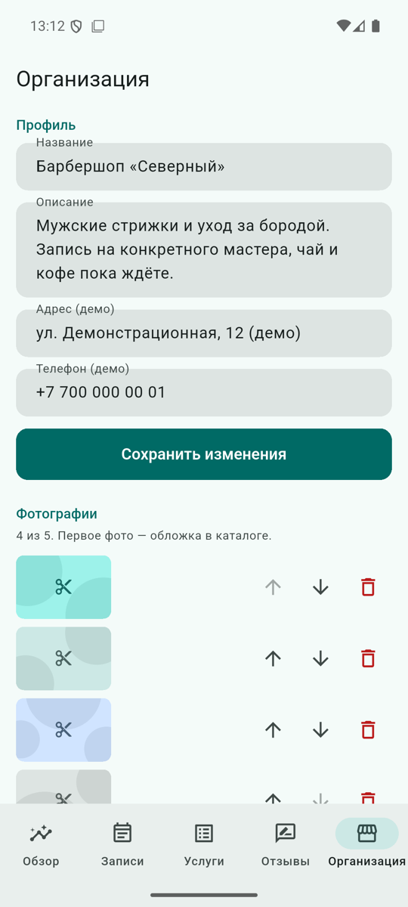
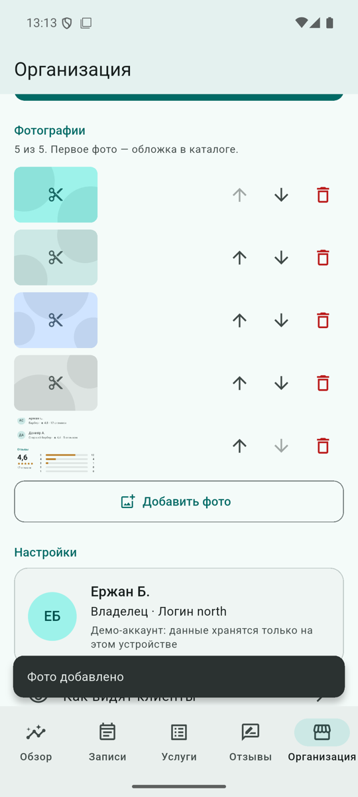
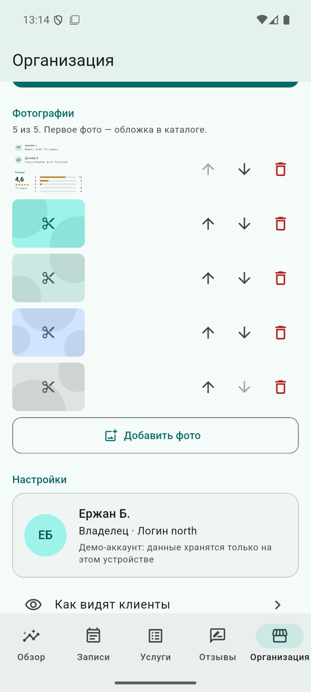

Кабинет владельца
После входа владельца вместо клиентской навигации открывается оболочка организации. Все данные и действия в ней ограничены organizationId владельца.



Разделы
| Вкладка | Что делает владелец | Экран |
|---|---|---|
| Обзор | KPI и графики за 7, 30 или 90 дней, табличный вид каждого графика — см. «Аналитика» | OwnerDashboardScreen |
| Записи | Сегодня / предстоящие / прошедшие; детали; «Визит состоялся» после начала визита; «Я на месте» за клиента; рукописный ввод номера талона на планшете ресепшена | OwnerBookingsScreen, TicketCheckInScreen |
| Услуги | Добавить услугу, изменить название, описание, длительность, базовую цену, варианты цены, специалистов; временно скрыть от клиентов | OwnerServicesScreen, ServiceEditorScreen |
| Отзывы | Распределение оценок, сортировка, ответ на отзыв | OwnerReviewsScreen |
| Организация | Название, описание, адрес и телефон (демо-поля), до пяти фото с порядком и удалением, «Как видят клиенты», тёмная тема, инструменты разработчика, выход | BusinessProfileScreen |
Услуги и прайс
- Валидация общая для формы и репозитория (
BusinessRules): название 3–60 символов, описание до 600, длительность 15 минут – 8 часов с шагом 15 минут, цена 1–1 000 000 ₸, до 6 вариантов цены с непустыми неповторяющимися названиями, хотя бы один специалист своей организации. - Если у услуги есть варианты цены, клиент обязан выбрать один при записи, а в каталоге показывается «от N ₸». Выбранный вариант и цена сохраняются в записи.
- Скрытая услуга исчезает из каталога и не бронируется, но остаётся в существующих записях и в списке владельца с пометкой «Скрыта».
- Жесты: долгое нажатие на услугу открывает меню «Изменить / Скрыть»; кнопка «⋮» — то же меню без жеста.
Фотографии



- Выбор —
image_picker: на Android 13+ это системный Photo Picker, разрешение на доступ к хранилищу не нужно. Изображение уменьшается до 1600 px по большей стороне, качество 85. - Файл копируется в каталог приложения (
FilePhotoStorage); в базе хранится только путь. Если исходный файл в галерее удалят, копия останется. Битый или пропавший файл показывается заглушкой «Фото недоступно». - Проверки в репозитории: не больше 5 фото, расширения JPG/PNG/WEBP/HEIC, размер до 8 МБ. При пяти фото кнопка «Добавить фото» сразу показывает сообщение и не открывает выбор.
- Порядок меняется кнопками «Переместить выше / ниже» (видимая альтернатива перетаскиванию), первое фото — обложка в каталоге. Удаление — с подтверждением, файл удаляется.
- В списках изображение декодируется в размере показа (
cacheWidth), а не в полном разрешении.
Изоляция организаций
Владелец «Северного» не видит записи, аналитику, отзывы и фото «Белой линии» и не может их менять: репозитории проверяют organizationId в каждом методе. Подробно — «Матрица прав».
Тесты
test/features/business/business_repository_test.dart— валидация организации и услуг, варианты цены, скрытие, лимит и формат фото, порядок и удаление.test/features/business/owner_screens_test.dart— оболочка владельца, фильтр периода, превью без записи и избранного, создание услуги с ошибками и без, скрытие долгим нажатием и через «⋮», правка профиля, шестое фото, ответ на отзыв, рукописная отметка.- Интеграционные сценарии 4–6 на эмуляторе.